Beyond Rest-State, Homogeneous
System Identification
Complex initial conditions, non-uniform material fields, and a spectral loss,
via Differentiable MPM + 3D Gaussian Splatting
Abstract
Classical physical system identification makes two convenient assumptions: the object starts at rest, and it is made of one homogeneous material. Real objects break both. We pose a harder inverse problem: from observed dynamics, recover a complex initial condition (a velocity field and a pre-stressed deformation state) on a non-uniform material field. We build the recovery on a fully differentiable Material-Point-Method simulator coupled to 3D Gaussian Splatting, and study when each quantity is actually identifiable. We further show that the usual L2 objective struggles with oscillatory motion, and analyze a spectral loss together with the landscape of the objective across setups.
Motivation
- Rest-state assumption. Objects are assumed at rest at t = 0. How do we learn dynamics for something released from a deformed state?
- Scalar material. A single global stiffness is fit. Can we instead recover a field and model spatially-varying materials?
- Identifiability. Differentiable physics does not always converge to ground truth. When is the system genuinely identifiable?
- Loss design. L2-style losses are weak for oscillations: a frequency mismatch is bounded and breeds local minima.
- Coupling. Velocity and material are often fit independently. We train them jointly and characterize the regime where each dominates.
Released from a deformed state (F0)
Most methods assume the object is at rest at t = 0. We instead parametrize the initial displacement field with an MLP and recover the pre-stressed deformation gradient F0 by autograd through the simulator. The recovered pre-stress reproduces the full release-and-oscillation dynamics.
Pre-stressed spring, released from rest
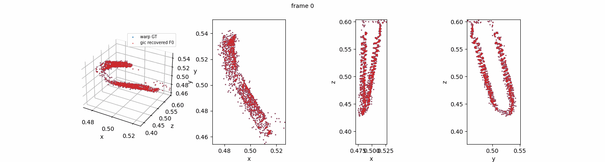
Rendered rollout of the recovered pre-stress (image space)
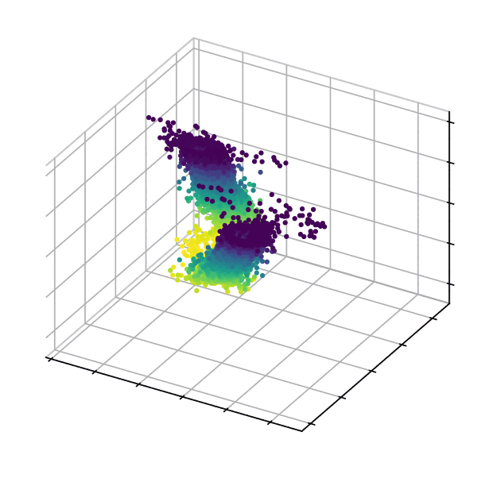
Same rollout as a 3D point cloud
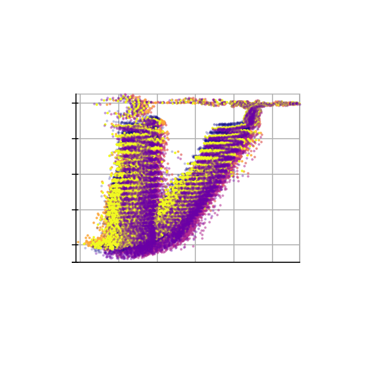
Stroboscopic overlay, xz view
Pre-stressed bend
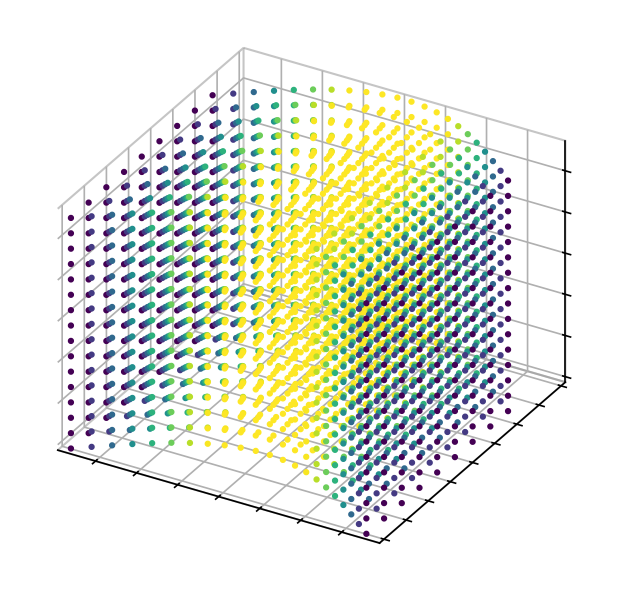
t = 0 · released bend
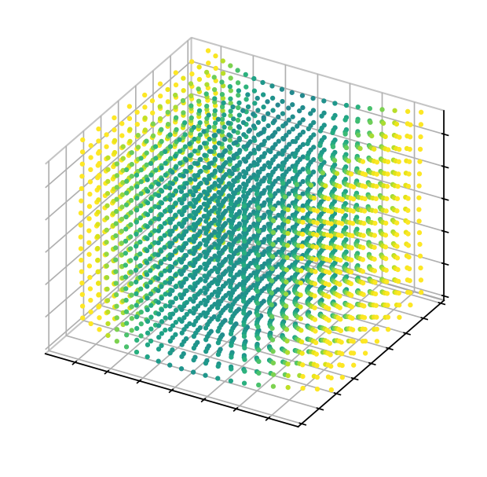
t = 4
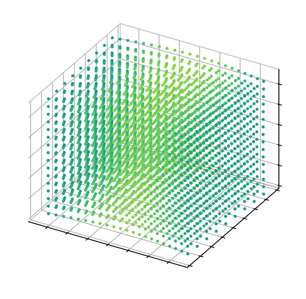
t = 8 · colour = local strain
1.2×10−3
F0 bend · rest-state RMSE · shear-profile corr 0.99
9.1×10−5
F0 spring · rest-state RMSE (uniform pre-stress)
Inhomogeneous initial velocity (v0 field)
Prior work often assumes the object moves uniformly in a single direction. We recover a spatially-varying initial velocity field v0(x) on a voxel grid, optimized end-to-end through the simulator. The recovered field reproduces the bend even though only its rollout is observed.
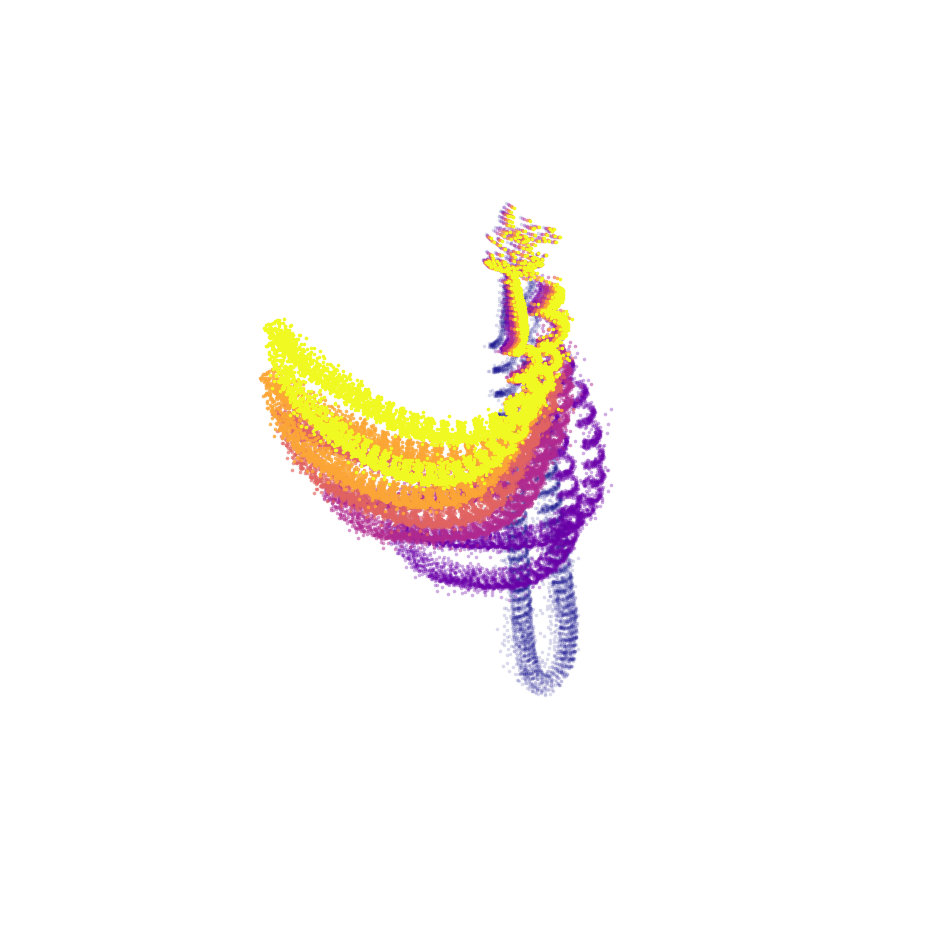
Ground-truth v0-field rollout
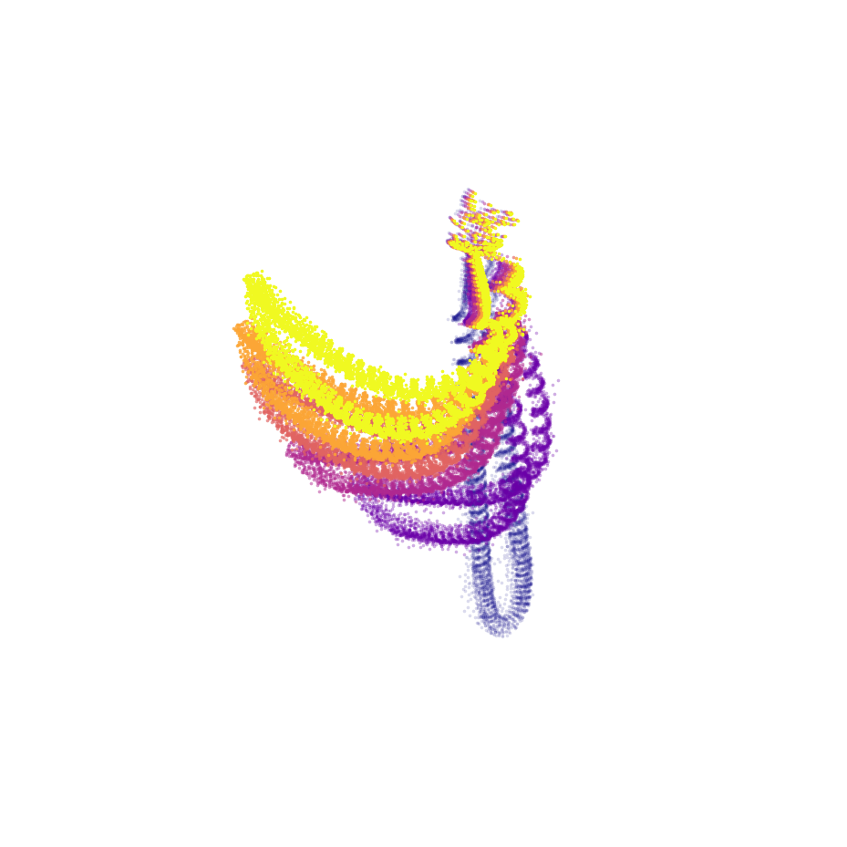
Recovered v0-field rollout
0.97
v0 bend-field · profile corr (shape recovered; amplitude smoothed)
Inhomogeneous material (E field)
A single global stiffness cannot describe a soft tip on a stiff stem. We recover a spatially-varying Young's modulus E(x). Here a circular excitation probes the field; the recovered stiffness matches ground truth to a few percent.
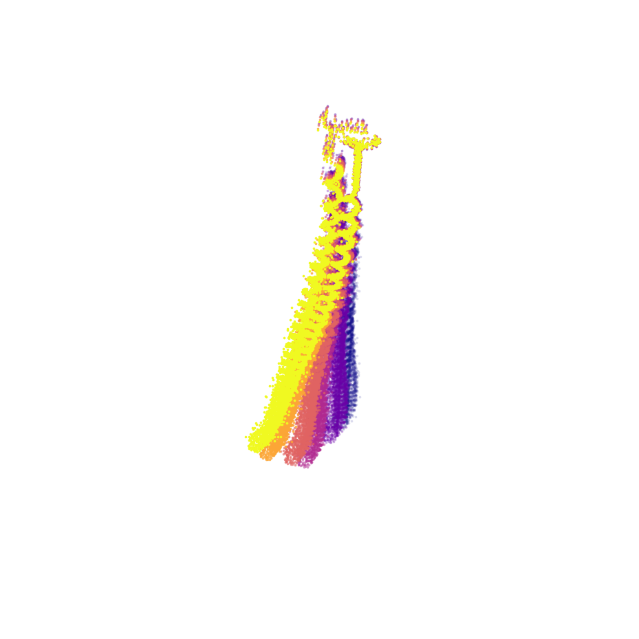
Spatially-varying E(x) under a circular excitation
2.8%
E field · relative error (logE error 0.012)
Image-space recovery (telephone)
The whole pipeline is differentiable end-to-end, so the recovery can be driven directly by a rendered video, with background, through 3D Gaussian Splatting. From a static initial condition and the observed motion, we recover the underlying trajectory.
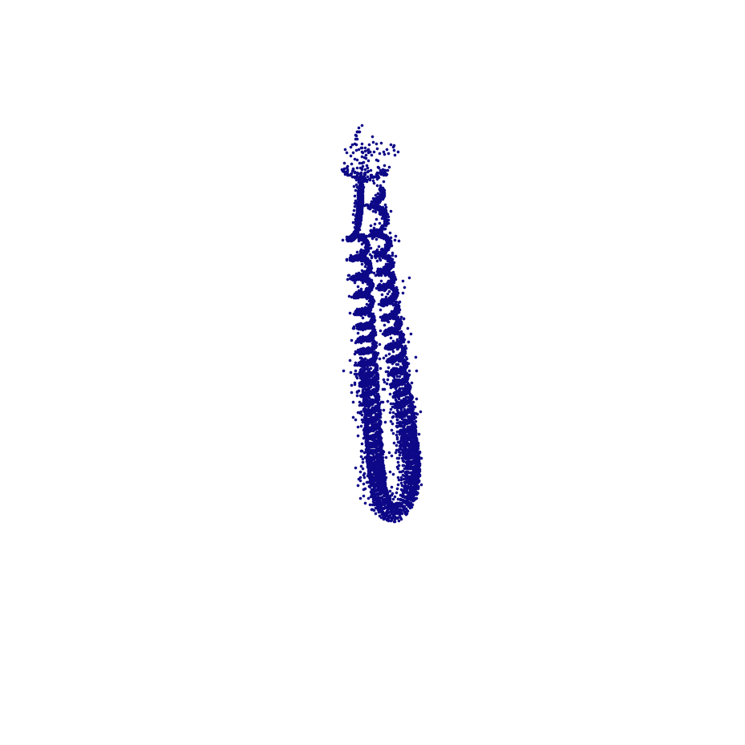
Static initial condition (t = 0)
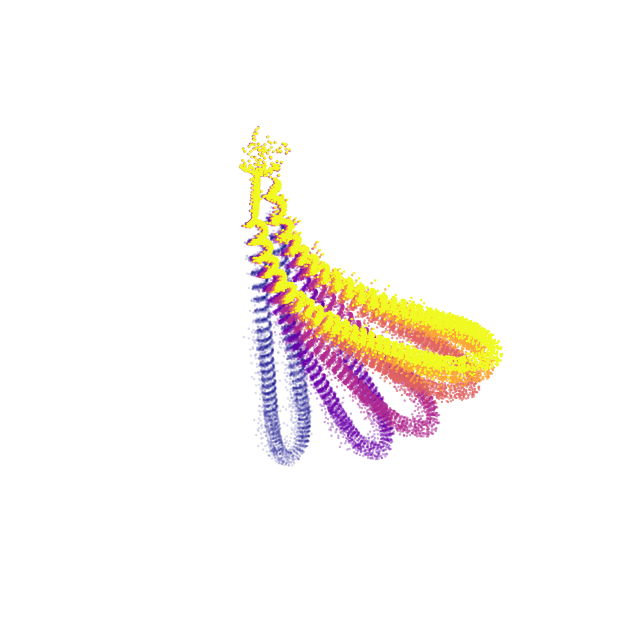
Recovered trajectory (stroboscopic 3D cloud)
Amplitude vs. frequency, and a spectral loss
By drawing the 2D objective landscape across setups, we find a clean division of labour: E (and Poisson's ratio) governs frequency, while v0 / F0 govern amplitude. Because a time-domain L2 loss bounds frequency mismatch and folds under Nyquist sampling, we analyze a spectral loss that exposes the period–stiffness relation T ∝ 1/√E directly.
Poster
References & Related Work
- J. Cai, Y. Yang, W. Yuan, et al. Gaussian-Informed Continuum for Physical Property Identification and Simulation. NeurIPS 2024 (Oral). Inverse-pipeline backbone this project builds on.
- B. Kerbl, G. Kopanas, T. Leimkühler, G. Drettakis. 3D Gaussian Splatting for Real-Time Radiance Field Rendering. SIGGRAPH 2023.
- T. Xie, Z. Zong, Y. Qiu, et al. PhysGaussian: Physics-Integrated 3D Gaussians for Generative Dynamics. CVPR 2024.
- T. Zhang, Q. Yu, R. Gao, et al. PhysDreamer: Physics-Based Interaction with 3D Objects via Video Generation. ECCV 2024.
- X. Li, Y.-L. Qiao, P. Y. Chen, et al. PAC-NeRF: Physics Augmented Continuum NeRF for Geometry-Agnostic System Identification. ICLR 2023.
- L. Zhong, H.-X. Yu, J. Wu, Y. Li. Reconstruction and Simulation of Elastic Objects with Spring-Mass 3D Gaussians. ECCV 2024.
- Y. Hu, Y. Fang, Z. Ge, et al. A Moving Least Squares Material Point Method with Displacement Discontinuity and Two-Way Rigid Body Coupling (MLS-MPM). SIGGRAPH 2018.
BibTeX
@misc{hong2026beyondrest,
title = {Beyond Rest-State, Homogeneous System Identification},
author = {Hong, Casey},
note = {Embodied Vision (CSIE5421) final project, National Taiwan University},
year = {2026},
url = {https://kc0506.github.io/ev-final-project/}
}